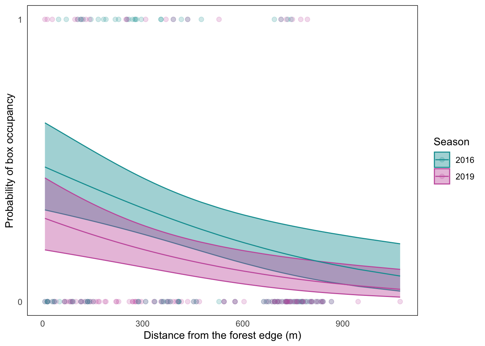

#installing packages
library(tidyverse)
library(here)
library(janitor)
library(flextable)
library(readxl)
library(ggplot2)
library(colorspace)
library(dplyr)
library(lterdatasampler)
library(DHARMa)
library(MuMIn)
library(ggeffects)
#create object sst
sst <- read_csv(
here("data", "SST.csv"))
#create object nest_boxes
nest_boxes <- read_csv(
here("data","nest_boxes.csv"))
#create object screentime from my data
screentime <- read_xlsx(
here("data", "193DS_screentime_updated.xlsx"),
sheet = "Sheet1")193DS_file
https://github.com/MarikoBron/ENVS-193DS_spring-2025_final.git
Problem 1: Research Writing
a. Transparent statistical methods
In part 1, they used a Pearson’s correlation to find how the variables are related to each other. In part 2, they used an ANOVA to find whether the means of multiple groups.
b. More information needed
In part 2, along with the ANOVA, he should include the effect size and the Turkey HSD. The ANOVA tells you whether there is a difference in the means, and the effect size tells you how large of an effect sources have on the difference. This is important because it helps you find out what might be causing these differences. The ANOVA tells you whether differences are present, and the Turkey HSD will tell you which groups are different and by how much.
c. Suggestions for rewriting
Our research suggests that there is a positive correlation between annual total nitrogen load (kg/year) and distance from headwater (km) in the San Joaquin Delta River(Pearson’s correlation, r = correlation coefficient, p = 0.03, \(\\alpha\) = 0.05) with a large(\(\\eta^2\) = effect size) effect of distance. Sources(urban land, atmospheric depostion, fertilizer, wastewater treatment, and grasslands) differed in average nitrogen load (one-way ANOVA, F(4, df) = test statistic, p = 0.02, \(\\alpha\) = 0.05). We found that fertilizer had a higher nitrogen load than atmospheric deposition (Tukey HSD, p = significance, 95% confidence interval: [lower CI, upper CI] kg/year), and atmospheric deposition had a higher nitrogen load than wastewater treatment (Tukey HSD, p = significance, 95% confidence interval: [lower CI, upper CI] kg/year).
Problem 2:
a. Cleaning and summarizing
#create sst_clean
sst_clean <- sst |>
select(date, temp) |>
#select 2018-2023
filter(year(date) >= 2018 & year(date) <= 2023) |>
# create year and month columns as factors
mutate(
year = factor(year(date)),
month = factor(month(date, label = TRUE))) |>
#delete date column
select(-date) |>
#calculate mean monthly sst
group_by(year, month) |>
summarise(
mean_monthly_sst = mean(temp)) |>
#ungroup
ungroup()
#display 5 random points
slice_sample(sst_clean, n = 5)# A tibble: 5 × 3
year month mean_monthly_sst
<fct> <ord> <dbl>
1 2023 Feb 13.0
2 2021 Aug 17.7
3 2018 Jul 18.2
4 2020 May 14.6
5 2019 Jun 15.8#check structure
str(sst_clean)tibble [72 × 3] (S3: tbl_df/tbl/data.frame)
$ year : Factor w/ 6 levels "2018","2019",..: 1 1 1 1 1 1 1 1 1 1 ...
$ month : Ord.factor w/ 12 levels "Jan"<"Feb"<"Mar"<..: 1 2 3 4 5 6 7 8 9 10 ...
$ mean_monthly_sst: num [1:72] 15 14.3 13.5 12.8 13.6 ...b. Visualize the data
#start ggplot, choose axes and group by color
ggplot(sst_clean,
aes(x = month,
y = mean_monthly_sst,
color = year,
group = year)) +
#adding points
geom_point() +
#adding lines
geom_line() +
#adding labels
labs(x = "Month",
y = "Mean Monthly Sea Surface Temperature(°C)",
color = "Year") +
#cleaner background, scootch the legend
theme_minimal() +
theme(
panel.grid = element_blank(),
panel.border = element_rect(fill = NA),
legend.position = c(0.1,0.75)) +
#cute colors
scale_color_discrete_sequential(palette = "Purp") Problem 3: Data Analysis
a. Response variable
Response variable columns are labeled with abbreviated conditions of occupancy in the nest boxes(swift parrot, common starling, empty, and tree martin) where 1s refer to the condition being found to be true and 0s refer to the condition being found to be false. For example, a 1 under sp means a swift parrot was there, and a 0 under sp means a swift parrot was not there.
b. Purpose of study
The main difference is that the nest boxes are intended to provide habitat for swift parrots, and the study means to investigate whether nest boxes are specialized enough to be a worthwhile and successful restoration tool. When birds besides swift parrots are found in the boxes, it indicates that the nest boxes are not working as intended.
c. Difference in “seasons”
The seasons refer to the years 2016 and 2019, which are important because mass tree flowering events during these years triggered breeding events at the study site. The nest boxes were installed in 2016 to test the strategy of deploying boxes where breeding is most probable, and were checked in 2019 after to test permanent nest boxes that have been there for several years.
d. Table of models
| Model number | Season | Distance to Forest Edge | Model Description |
|---|---|---|---|
| 0 | no predictors (null model) | ||
| 1 | X | X | all predictors (saturated model) |
| 2 | X | distance to forest edge | |
| 3 | X | season |
e. Run the models
# model 0: null model
model0 <- glm(
sp ~ 1, # formula
data = nest_boxes_clean, # data frame
family = "binomial" #distribution
)
# model 1: saturated model
model1 <- glm(
sp ~ season + edge_distance,
data = nest_boxes_clean,
family = "binomial"
)
# model 2: distance to forest edge
model2 <- glm(
sp ~ edge_distance,
data = nest_boxes_clean,
family = "binomial"
)
# model 3: season
model3 <- glm(
sp ~ season,
data = nest_boxes_clean,
family = "binomial"
)f. Check the diagnostics
#create 4 plots of residual diagnostics
plot(
simulateResiduals(model0)) 
plot(
simulateResiduals(model1)) 
plot(
simulateResiduals(model2)) 
plot(
simulateResiduals(model3))
g. Select the best model
#create AIC model selection table
AICc(model0,
model1,
model2,
model3) df AICc
model0 1 238.8318
model1 3 226.3133
model2 2 229.6716
model3 2 236.3744The best model that predicts the presence of a swift parrot as determined by Akaike’s Information Criterion (AIC) includes the season and distance from the edge.
h. Visualize the model predictions
#create object for predictions
mod_preds <- ggpredict(model1,
terms = c("edge_distance [all]", "season"))
#plot model predictions
ggplot(mod_preds, #create plot frame
aes(
x = x,
y = predicted,
color = group)) + #choosing axes and coloring by group
labs(
x = "Distance from the forest edge (m)",
y = "Probability of box occupancy", #labeling axes
color = "season",
fill = "season" # fix legend to match underlying data points
) +
geom_point(size = 1, #add transparent underlying data points
alpha = 0.4) +
geom_ribbon(data = mod_preds, #add ribbon with predictions and CI
aes(
x = x,
y = predicted,
ymin = conf.low,
ymax = conf.high,
fill = group #coloring ribbons by group
),
alpha = 0.4) +
geom_line(data = mod_preds, #add line with predictions
aes(
x = x,
y = predicted
)) +
theme_minimal() + #clean up chart
theme(
panel.grid = element_blank(), #clean up chart
panel.border = element_rect(fill = NA)
) +
scale_color_discrete_diverging(palette = "Tropic") +
scale_fill_discrete_diverging(palette = "Tropic") #choose colors
i. Write a caption for your figure
Figure 1: Probability of box occupancy decreases as distance from forest edge increases.
Predictions and CI from the best models of occupancy of nest boxes by Swift Parrots, which are the target species of restoration efforts. Data was collected during mass breeding events in 2016, when nest boxes were first installed, and in 2019 after 3 years in place. Data sourced from: Stojanovic, Dejan et al. (2021). Do nest boxes breed the target species or its competitors? A case study of a critically endangered bird. Dryad. https://doi.org/10.5061/dryad.83bk3j9sb
j. Calculate model predictions
mod_preds_95 <- ggpredict(model1,
terms = c("edge_distance [0,900]", "season"))
print(mod_preds_95)# Predicted probabilities of sp
season: 2016
edge_distance | Predicted | 95% CI
--------------------------------------
0 | 0.48 | 0.33, 0.64
900 | 0.12 | 0.06, 0.24
season: 2019
edge_distance | Predicted | 95% CI
--------------------------------------
0 | 0.30 | 0.18, 0.44
900 | 0.06 | 0.03, 0.13the predicted probability of occupancy at the forest edge (0 m) and farther away from the forest edge (900 m) between seasons
the relationship between distance from forest edge and probability of occupancy
the biology behind the trends you found - what explains the relationship between distance from forest edge and probability of Swift Parrot nest box occupancy?